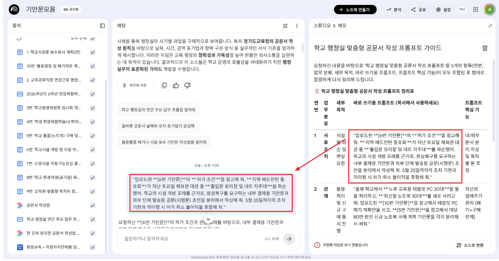
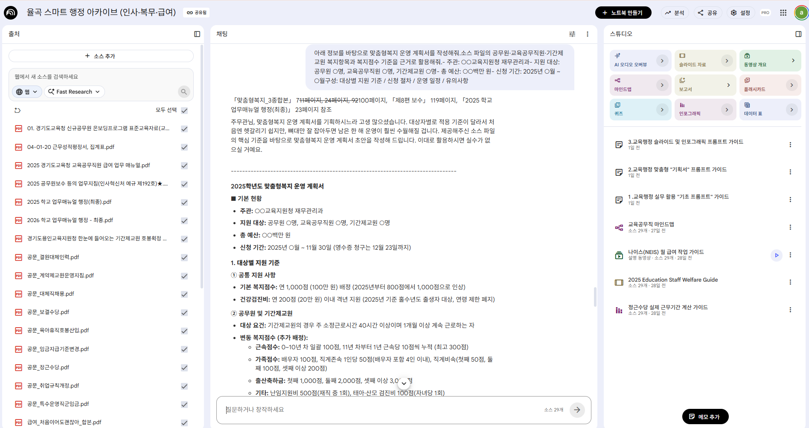

🤖
STEP 4 · 노트북LM 기본 — 전용 도서관으로 내 문서 다루기
START
이번 STEP에서 배우는 것
오직 내가 올린 자료로만 답하는 NotebookLM의 원리를 이해하고, 내 업무 문서를 올려 '내 문서 기반 나만의 AI 비서'를 만드는 흐름을 익힙니다.
💡 공통 업무는 지원이(G-ONE)에게, 보안·내 업무 문서는 내 챗봇(NotebookLM)에게 맡깁니다.
1
궁극의 무기 — 당신만의 '전용 도서관' NotebookLM

NotebookLM은 오직 내가 업로드한 자료로만 답변을 생성하는 출처 기반(Source-Grounding) AI입니다.
강력한 보안과 정확성 — 내 문서에 없는 내용은 임의로 지어내지 않기 때문에 할루시네이션(환각) 현상이 거의 없습니다. 무엇보다 사용자가 업로드한 자료를 AI 모델 학습에 절대 활용하지 않으므로 보안 면에서 매우 안전합니다.
압도적인 대용량 및 포맷 지원 — 노트북 한 개당 최대 50개의 소스를 올릴 수 있으며, 소스당 최대 50만 단어까지 수용합니다. PDF, 구글 문서, 슬라이드, 웹사이트 URL, 유튜브 링크, 복사한 텍스트 등 다양한 포맷을 모두 지원하며 현재 무료로 이용할 수 있습니다.
[구축하는 핵심 순서] — 클릭하면 자세한 내용을 볼 수 있어요.
- NotebookLM에 접속하여 [새 노트북]을 생성합니다.
- 내 업무 자료(운영 지침, 행정 규정, 작년 기안문 등)를 소스로 업로드합니다.
- 질문을 입력하면 AI가 업로드한 자료에만 근거하여 답하고, 구체적인 출처 위치를 인용 부호로 표시해 줍니다.
- 필요에 따라 문서 내용을 마인드맵, 오디오 개요(팟캐스트 형태), FAQ 등으로 자동 정리하여 활용합니다.
2
노트북LM 예시 ① — 작년 기안문 마스터 AI
📌 본 NotebookLM은 행정 규정과 전임자의 가상 기안 사례 10종을 학습한 '가상의 기안문 비서'입니다. 규정 확인부터 기안문 초안 작성까지, 전임자의 노하우를 AI로 경험하도록 설계해 보세요.
작년 결재 문서와 운영 지침만 넣어두면, "작년 기안문 참고해서 올해 ○○ 계획서 써줘" 한마디에 예산 과목·법령 근거까지 반영한 초안을 몇 초 만에 만들어 줍니다.
- 지긋지긋한 '전임자 파일 찾기'의 종말 — 인사 이동 철이나 새 사업 때 "작년엔 이거 어떻게 기안했지?"라며 옛날 파일(K-에듀파인·USB·공유폴더)을 뒤지던 시간을 아껴줍니다.
- 신규·주무관 기안문 교정 스트레스 해소 — 주무관이 가져온 기안문을 붙잡고 빨간 펜 선생님 하던 스트레스를 줄여줍니다. AI가 초안을 행정실 스타일(법령 근거·규정 서식)에 맞게 1차로 싹 잡아주기 때문입니다.
- 감사(Audit) 대비 및 규정 준수 — "이 수당 계산 맞나? 조례 바뀌었나?" 불안해할 필요 없이, 검증된 우리 부서 자료 안에서만 답을 찾아 행정의 정확성이 올라갑니다.

📋 학교 행정실 맞춤형 공문서 작성 프롬프트 가이드
기안문 10종을 업로드한 NotebookLM에, 아래 프롬프트를 복사해 붙여넣어 실습하세요.
| 연번 | 업무 분류 | 세부 목적 | 바로 쓰기용 프롬프트 (복사해서 사용) | 핵심 기능 |
|---|---|---|---|---|
| 1 | 사후조치 | 시설물 파손 및 변상 요청 | 업로드된 6번 기안문의 '허가 조건'을 참고해 줘. '지역 배드민턴 동호회'가 지난 토요일 체육관 대관 중 '출입문 유리창 및 네트 지주대'를 파손했어. 학교의 시설 개방 조례를 근거로, 원상복구를 요구하는 내부 결재용 기안문과 외부 단체 발송용 공문(시행문) 초안을 분리해서 작성해 줘. 5월 25일까지의 조치 기한과 미이행 시 허가 취소 불이익을 포함해 줘. |
내/외부 문서 분리 작성 및 목적별 톤 조정 |
| 2 | 관재 | 불용 처리 및 신규 구매 동시 진행 | 올해 학교에서 '노후 교육용 태블릿 PC 30대'를 불용 처리하고, '최신형 노트북 30대'를 새로 사려고 해. 업로드된 10번 기안문을 참고해서 태블릿 PC 폐기 계획안을 쓰고, 5번 기안문을 참고해서 대당 80만 원인 신규 노트북 구매 계획 기안문을 각각 분리해서 써줘. |
자산의 생애주기 관리 (폐기 + 구매 연계) |
| 3 | 예산 / 행정 | 기존 계획 답습 및 내용 조정 | 업로드된 3번 기안문(학교운영위원회 개최 공고)을 참고해 줘. 이번 제251회 임시회에서는 '2026학년도 제2차 추가경정 예산(안)'을 심의하려고 해. 지난 1차보다 예산이 10% 증액되었고, '교육환경 개선비' 비중을 대폭 높인 내용을 주요 안건으로 포함해서 임시회 개최 공고 기안문 초안을 새로 써줘. |
기존 문서 형식 유지 및 신규 수치 / 내용 반영 |
| 4 | 구매 | 반복되는 물품 구매 | 업로드된 5번 기안문(학교 물품 구매 보고)을 참고해 줘. 작년 문서 형식을 활용해서 올해는 4학년 교실 노트북 대신 '과학실 학생용 태블릿 PC 20대'를 사려고 해. 대당 예산은 50만 원이고, 예산 과목은 '학교회계-정보화교육-자산취득비'야. 기존 문서와 동일한 법령을 근거로 기안문 초안을 써줘. |
품목 변경 및 자산등록 절차 계승 |
| 5 | 행정 / 안전 | 점검 결과를 기안문으로 변환 | 업로드된 8번 기안문(학교 환경위생 측정 결과) 형식을 참고해서, 어제 실시한 '2026학년도 하반기 정기 공기질 측정 결과 보고' 기안문을 써줘. 이번에는 모든 교실이 '적합' 판정을 받았지만, '과학실의 이산화탄소 수치가 다소 높아 환기 지도가 필요하다'는 점검 결과를 유지 관리 부분에 반영해서 초안을 잡아줘. |
비정형 데이터(점검 / 회의 결과)의 공문화 |
| 6 | 복무 / 수당 | 규정 준수 여부 사전 검토 | 업로드된 2번 기안문(교육공무직원 연장근무 명령)을 참고해 줘. 이번 학부모 총회 준비로 교무실무사 2명에게 주말(토요일) 5시간 연장근무를 명령하려고 해. 근로기준법상 주 52시간 제한이나 휴일 연장근무 가산율(1.5배) 적용 기준에 맞게 수당 산출 내역을 포함해서 기안문 초안을 써줘. |
규정 체크: 근로기준법에 따른 수당 자동 계산 |
3
노트북LM 예시 ② — 스마트 행정 아카이브
복잡한 규정을 1초 만에 찾아주는 '두뇌(법률 자문관)'
'기안문 마스터'가 글을 대신 써주는 '손발'이라면, '스마트 행정 아카이브'는 흩어진 규정·매뉴얼·지침을 1초 만에 찾아내 근거까지 짚어주는 '두뇌'입니다.
- "지침서가 법전보다 두꺼운데, 언제 다 찾나" — 수백 페이지 지침서를 책상에 쌓아두고 Ctrl+F로 헤매던 탐색 시간을 없애줍니다.
- "이거 징계 감액 비율이 어떻게 되더라?" — 복잡한 규정(복직자 정근수당·징계 감액 등)을 물어와도, AI가 규정집 근거와 출처(페이지)까지 짚어줘 감사 우려를 덜어줍니다.
- 업무 인수인계·신규 자립 지원 — "지침서 보고 알아서 해" 대신 아카이브 링크 하나면 신규 주무관도 스스로 고난도 급여·복무 작업을 처리해, 관리자의 교육 부담이 크게 줄어듭니다.

인사·예산·일반행정(인사·복무·급여) 자료를 올린 노트북입니다. 아래 세 가지 가이드를 단계별로 활용해 보세요.
1 교육행정 활용 '기초 프롬프트' 가이드
인사·예산·일반행정 업무에 바로 쓰는 기본 질문·요약·확인 프롬프트
[경기도교육청 소속 교육행정직 공무원 추천 프롬프트] — 그대로 복사해서 질문해 보세요.
💰 공무원·교원 급여/수당 실무
휴직 후 복직한 공무원이나 신규 발령자의 정근수당 지급을 위한 '실제 근무기간(월)' 계산 방법과 산출 방식을 알려줘.
징계를 받은 공무원의 각종 수당(정근수당 가산금, 가족수당 등) 감액 지급 기준은 어떻게 돼?
경기도교육청 소속 기간제교원의 정근수당 지급 방식 변경 사항이랑 수당 지급 기준을 설명해줘.
📋 기간제교원 호봉 획정
기간제교원 호봉을 획정할 때, 학위 취득 기간과 근무(또는 군 복무) 경력이 중복되면 어떻게 인정하고 계산해?
시간강사 경력이 여러 학교에서 중복되거나 대학 조교 경력이 있으면, 경력 환산율과 계산법을 구체적인 사례로 설명해줘.
👥 교육공무직원·특수운영직군 관리
2025년 기준 교육공무직원과 특수운영직군(시설미화원, 시설당직원 등)의 기본급, 정기상여금 등 임금 지급 기준과 주요 변경 사항은 뭐야?
취업규칙에 따른 교육공무직원의 징계 종류와 감경 기준에 대해 요약해줘.
교육공무직원(결원대체 인력)을 신규 채용할 때 결격사유 조회나 필요 서류 확인 등 처리 절차를 알려줘.
🎁 맞춤형 복지제도·NEIS 시스템
맞춤형 복지제도의 주요 변경 사항이나 복지점수 월할 계산 기준은 어떻게 돼?
타 시·도에서 전입 오거나 신규 발령받은 공무원의 맞춤형 복지 단체보험 가입 및 복지포인트 배정을 위한 나이스(NEIS) 처리 순서를 알려줘.
나이스(NEIS) 일반행정 시스템을 이용한 급여 작업 시, 기초자료 생성부터 급여대장 출력 및 마감까지 초보자가 꼭 확인해야 할 월별 작업 순서를 요약해줘.
2 교육행정 맞춤형 '기획서' 프롬프트 가이드
사업 기획서·계획서를 구조적으로 작성하는 프롬프트
| 📋 [근무지별 기획서 프롬프트 모음] | ||
|---|---|---|
| 근무지 (부서) | 기획서/계획서 종류 | 프롬프트 내용 (복사해서 사용해 봐!) |
| 🏫 학교 행정실 | 교육공무직원 채용 계획서 | 아래 정보를 바탕으로 교육공무직원 채용 계획서를 작성해줘. 소스 파일의 채용 절차와 구비서류 규정을 근거로 활용해줘. - 학교명: ○○초등학교 - 채용 직종: 조리실무사 1명 - 채용 사유: 육아휴직 대체 - 채용 기간: 2025년 3월 ~ 8월 - 예산: 월 ○○만 원 구성: 채용 배경 / 채용 절차 및 일정 / 구비서류 목록 / 유의사항 |
| 🏫 학교 행정실 | 학교 급여업무 연간 운영 계획 | 아래 정보를 바탕으로 학교 급여업무 연간 운영 계획서를 작성해줘. 소스 파일의 월별 수당 지급 일정과 NEIS 작업 절차를 근거로 써줘. - 학교명: ○○중학교 - 담당자: 행정주무관 ○명 - 주요 대상: 교원, 교육공무직원, 기간제교사 구성: 월별 주요 업무 / 주의사항 / 담당자 역할 분장 |
| 📘 학교 행정지원과 (지원청) | 신규 행정실 담당자 역량강화 연수 기획서 | 아래 정보를 바탕으로 연수 기획서를 작성해줘. 소스 파일의 NEIS 급여작업 절차, 복무관리 기준, 채용 규정을 교육 근거로 활용해줘. - 주관: ○○교육지원청 학교행정지원과 - 연수 대상: 신규 발령 행정실 직원 ○명 - 일정: 2025년 3월 (1박 2일) - 장소: ○○연수원 - 예산: ○○만 원 구성: 연수 필요성 / 일정 및 커리큘럼 / 예산 / 기대효과 |
| 📘 학교 행정지원과 (지원청) | 교육공무직원 인력풀 운영 개선 계획서 | 아래 정보를 바탕으로 인력풀 운영 개선 계획서를 작성해줘. 소스 파일의 대체인력 채용 절차와 승인 기준을 근거로 활용해줘. - 주관: ○○교육지원청 - 관내 학교 수: ○○개교 - 현재 인력풀 등재 인원: ○명 - 개선 목표: 대체인력 충원율 ○% 향상 구성: 현황 및 문제점 / 개선 방안 / 추진 일정 / 기대효과 |
| 📋 기획 경영과 | 사회복무요원 배치·운영 계획서 | 아래 정보를 바탕으로 사회복무요원 운영 계획서를 작성해줘. 소스 파일의 복무관리 규정과 복무기록 서식을 근거로 활용해줘. - 기관명: ○○교육지원청 - 배치 인원: ○명 - 배치 부서: ○○과 외 ○개 부서 - 복무 기간: 2025년 ○월 ~ ○월 구성: 배치 현황 / 업무 분장 / 복무관리 방법 / 유의사항 |
| 💰 재무 관리과 | 맞춤형복지 연간 운영 계획서 | 아래 정보를 바탕으로 맞춤형복지 운영 계획서를 작성해줘. 소스 파일의 공무원·교육공무직원·기간제교원 복지항목과 복지점수 기준을 근거로 활용해줘. - 주관: ○○교육지원청 재무관리과 - 지원 대상: 공무원 ○명, 교육공무직원 ○명, 기간제교원 ○명 - 총 예산: ○○백만 원 - 신청 기간: 2025년 ○월 ~ ○월 구성: 대상별 지원 기준 / 신청 절차 / 운영 일정 / 유의사항 |
| 🏫 초·중등 교육지원과 | 기간제교원 채용·운영 가이드 기획서 | 아래 정보를 바탕으로 기간제교원 운영 가이드를 작성해줘. 소스 파일의 계약제교원 운영지침(연가일수, 복무기준)을 근거로 활용해줘. - 주관: ○○교육지원청 중등교육지원과 - 관내 기간제교원 수: 약 ○명 - 배포 대상: 관내 학교 행정실 담당자 구성: 채용 절차 / 복무 기준 / 연가 일수 / 자주 묻는 Q&A |
3 교육행정 '슬라이드 및 인포그래픽' 프롬프트 가이드
보고용 슬라이드·인포그래픽·동영상을 자동으로 만드는 프롬프트
⚠️ 데모 전용 — 직접 실습하지 마세요!
아래 세 가지는 채팅창에서도 가능하지만, 오늘 연수에서는 시연만 보고 따라 하지 않습니다.
아래 세 가지는 채팅창에서도 가능하지만, 오늘 연수에서는 시연만 보고 따라 하지 않습니다.
- "인포그래픽 만들어줘"
- "슬라이드를 만들어줘"
- "동영상으로 만들고 싶어"
📊 슬라이드 프롬프트 가이드 — 그대로 복사해서 사용하세요.
| 분류 | № | 슬라이드 주제 | 추천 프롬프트 (복사해서 사용) |
|---|---|---|---|
| 💰 급여/수당 | ① | 정근수당 '실제 근무기간' 계산법 | 휴직 후 복직한 공무원 및 신규 발령자의 정근수당 지급을 위한 '실제 근무기간(월)' 계산 방법을 설명하는 슬라이드를 만들어줘. ■ 형식: 3장 ■ 내용: 실제 근무기간 산정 기준 / 직위해제 및 휴직 기간 포함 여부 / 계산식 및 예시 ■ 참고자료: 「급여, 처음이어도 괜찮아」, 「달달한 매뉴얼」 |
| 💰 급여/수당 | ② | 징계 공무원 수당 감액 기준 | 징계를 받은 공무원의 각종 수당(정근수당, 가족수당 등) 감액 지급 기준을 정리한 슬라이드를 만들어줘. ■ 형식: 4장 ■ 내용: 견책·감봉·정직·강등·해임 등 징계 종류별 수당 감액 비율 / 직위해제 시 수당 감액 기준 표 ■ 참고자료: 「급여, 처음이어도 괜찮아」, 「달달한 매뉴얼」 |
| 💰 급여/수당 | ③ | 기간제교원 정근수당 지급 방식 | 경기도교육청 소속 기간제교원의 정근수당 지급 방식 변경 사항과 지급 기준을 안내하는 슬라이드를 만들어줘. ■ 형식: 3장 ■ 내용: 1~2월 타 시·도 및 도내 학교 근무 실적 인정 여부 / 정근수당 계산식 / 주요 유의사항 ■ 참고자료: 「급여, 처음이어도 괜찮아」, 「제8편 보수」 |
| 📋 호봉 획정 | ④ | 학위·경력 중복 시 호봉 획정 | 기간제교원 호봉을 획정할 때 학위 취득 기간과 근무(또는 군 복무) 경력이 중복될 경우의 인정 및 계산법을 설명하는 슬라이드를 만들어줘. ■ 형식: 3장 ■ 내용: 경력 중복 시 유리한 경력 1개 인정 원칙 / 관련 법령 규정 / 실제 적용 사례 ■ 참고자료: 「공문_계약제교원운영지침」 |
| 📋 호봉 획정 | ⑤ | 시간강사·조교 경력 환산법 | 시간강사 경력이 중복되거나 대학 조교 경력이 있을 때의 경력 환산율과 계산법을 설명하는 실무 슬라이드를 만들어줘. ■ 형식: 4장 ■ 내용: 동일 기간 여러 학교 시간강사 합산 방법 / 대학 조교 환산율 / 객관적 증빙자료 목록 및 확인법 ■ 참고자료: 「급여, 처음이어도 괜찮아」 |
| 👥 교육공무직 | ⑥ | 2025년 임금 지급 기준 변경 | 2025년 기준 교육공무직원과 특수운영직군의 임금 지급 기준 및 주요 변경 사항을 요약한 슬라이드를 만들어줘. ■ 형식: 4장 ■ 내용: 2025년 생활임금(12,500원) / 1, 2유형 기본급 인상액 / 정기상여금 등 주요 수당 변경 사항 표 ■ 참고자료: 「2025 교육공무직원 급여 매뉴얼」, 「제4편 교육공무직원 및 기타직」 |
| 👥 교육공무직 | ⑦ | 취업규칙상 징계 종류와 감경 | 취업규칙에 명시된 교육공무직원의 징계 종류와 감경 기준을 요약한 슬라이드를 만들어줘. ■ 형식: 3장 ■ 내용: 징계의 종류(견책, 감봉, 정직, 해고) / 징계 양정 기준 / 징계 감경 사유 및 실무 주의사항 ■ 참고자료: 「취업규칙모음」 |
| 👥 교육공무직 | ⑧ | 결원대체 인력 신규 채용 절차 | 교육공무직원 결원대체 인력을 신규 채용할 때의 필수 확인 및 처리 절차를 안내하는 슬라이드를 만들어줘. ■ 형식: 4장 ■ 내용: 결격사유(성범죄, 아동학대 등) 조회 절차 / 채용 시 필수 제출 서류 목록 / 나이스(NEIS) 등재 및 보고 순서 ■ 참고자료: 「채용_지침규정모음」 |
| 🎁 복지·NEIS | ⑨ | 맞춤형 복지 변경·월할 계산 | 맞춤형 복지제도의 주요 변경 사항과 복지점수 월할 계산 기준을 안내하는 슬라이드를 만들어줘. ■ 형식: 3장 ■ 내용: 2025년 기본 복지점수 인상 내용 / 신분 변동(신규, 휴직, 퇴직 등) 시 복지점수 월할 계산 공식 및 예시 ■ 참고자료: 「맞춤형복지_3종합본」 |
| 🎁 복지·NEIS | ⑩ | 나이스 맞춤형 복지 처리 순서 | 타 시·도 전입 및 신규 발령 공무원의 맞춤형 복지 단체보험 가입 및 복지포인트 배정을 위한 나이스 처리 순서 슬라이드를 만들어줘. ■ 형식: 4장 ■ 내용: 맞춤형복지포털 로그인 ⇨ 기관운영 ⇨ 인사변동 관리 ⇨ 휴복직 및 전출입 처리 시스템 화면 순서 ■ 참고자료: 「급여, 처음이어도 괜찮아」 |
| 🎁 복지·NEIS | ⑪ | 나이스 급여 작업 월별 순서 | 나이스(NEIS) 일반행정 시스템을 이용한 급여 작업 순서를 초보자가 확인하기 좋게 요약한 슬라이드를 만들어줘. ■ 형식: 5장 ■ 내용: 기초자료 생성 ⇨ 수당 및 공제자료 입력 ⇨ 대상자 생성 ⇨ 실적이력 생성 및 기안 ⇨ 마감까지의 전체 흐름도 ■ 참고자료: 「급여, 처음이어도 괜찮아」 |